The following pictures show n unit equilateral triangles packed inside the smallest known domino (of shortest side length s).
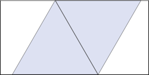 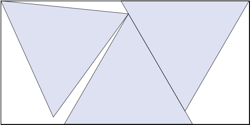 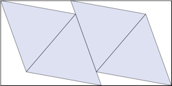 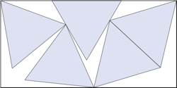 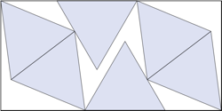 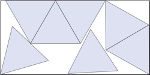 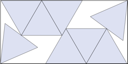 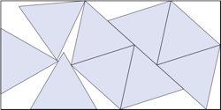 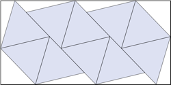 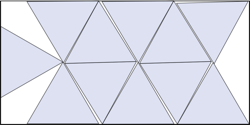 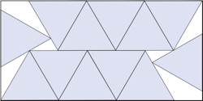 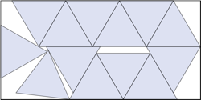 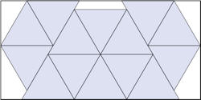 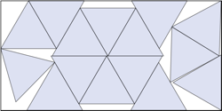 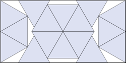 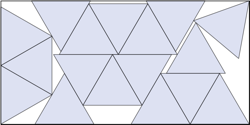 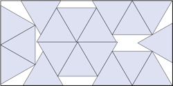 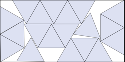 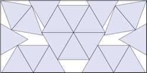
1-2.
s = √3/2
Trivial.
3.
s = .96796+
Found by Jonathan Viquerat
in April 2026
4.
s = 1.12036+
Found by Jonathan Viquerat
in April 2026
5.
s = 1.26315+
Found by Jonathan Viquerat
in April 2026
6.
s = 1.37629+
Found by Jonathan Viquerat
in April 2026
7.
s = 1.49076+
Found by Jonathan Viquerat
in April 2026
8.
s = 1.56293+
Found by Jonathan Viquerat
in April 2026
9.
s = 1.64908+
Found by Jonathan Viquerat
in April 2026
10.
s = 1.68303+
Found by Jonathan Viquerat
in April 2026
11.
s = 1.73127+
Found by Jonathan Viquerat
in April 2026
12.
s = 1.74040+
Found by Jonathan Viquerat
in April 2026
13.
s = 1.85319+
Found by Jonathan Viquerat
in April 2026
14.
s = 1.90191+
Found by Jonathan Viquerat
in April 2026
15.
s = 1.97950+
Found by Jonathan Viquerat
in April 2026
16.
s = 2
Found by Jonathan Viquerat
in April 2026
17.
s = 2.10306+
Found by Jonathan Viquerat
in April 2026
18.
s = 2.14913.+
Found by Jonathan Viquerat
in April 2026
19.
s = 2.24848+
Found by Jonathan Viquerat
in April 2026
20.
s = 2.29730+
Found by Jonathan Viquerat
in April 2026